💡 行前懶人包
- 貨幣與換匯：使用福林 (HUF)。千萬不要在路邊換匯所換錢，匯率極差且常有隱藏手續費，強烈建議改用 ATM 直接提款或全程刷卡。
- 小費文化：在布達佩斯餐廳用餐，帳單通常會「自動計入」服務費（約 10-15%），結帳前請務必看清楚，以免重複給小費。
- 打票與查票極嚴：布達佩斯地鐵查票員非常多。若使用「紙本車票」，進站前或上車時**必須**放入橘色的打卡機打票，否則查到一律視同逃票重罰！
🗺️ 必做體驗：布達佩斯 25 大絕美景點
以多瑙河為界，左岸是充滿歷史古蹟的「布達（Buda）」，右岸則是繁華熱鬧的「佩斯（Pest）」。以下為你盤點雙子城最經典的地標：
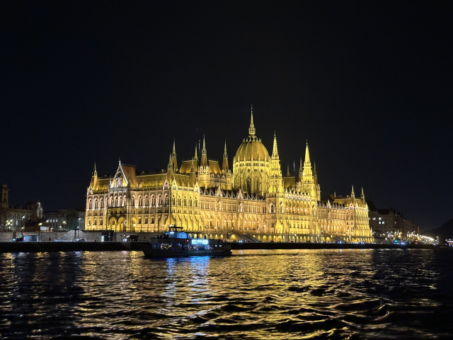
1. 匈牙利國會大廈 (Országház)
多瑙河畔最耀眼的建築瑰寶，融合了新哥德式與文藝復興風格。內部裝飾極其奢華，並存放著匈牙利國王的皇冠。
💭 Bryan 親測：現場比照片更震撼！無論從對岸俯瞰或就在旁邊仰望都無比壯觀！白天夜晚都一定不要錯過～
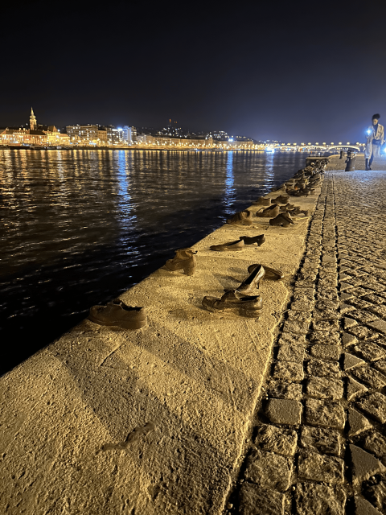
2. 多瑙河岸的鞋子 (Cipők a Duna-parton)
紀念二戰期間被法西斯民兵殺害的猶太人，他們被要求脫下鞋子後在河畔遭到槍決，散落的鐵鞋雕塑靜靜訴說著歷史的悲痕。
💭 Bryan 親測：創意但沉重的河畔裝置藝術，希望這恐怖的歷史永遠不要重演。
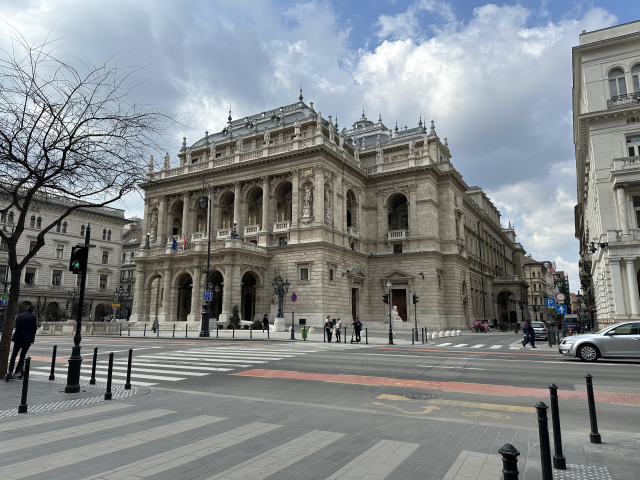
3. 匈牙利國家歌劇院 (Magyar Állami Operaház)
匈牙利最頂級的藝術殿堂，擁有極致華麗的新文藝復興風格內裝，音響效果名列世界前茅。
💭 Bryan 親測：外觀不知為何讓我想起維也納國家歌劇院
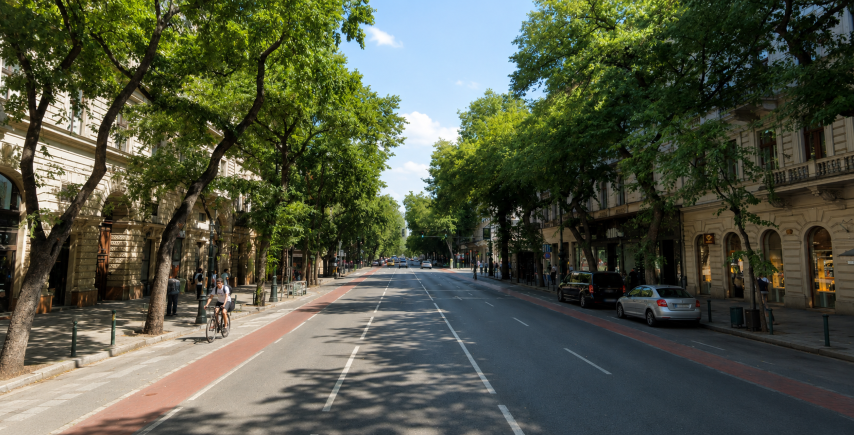
4. 安德拉什大街 (Andrássy út)
被列為世界文化遺產的林蔭大道。地底運行著歐洲大陸最古老的 M1 千禧地鐵線，兩旁坐落著高級精品店與宏偉別墅。
💭 Bryan 親測：從聖伊什特萬聖殿一路延伸到英雄廣場，兩旁林立著精緻高檔的新藝術建築，走在上面有種來到巴黎香榭麗舍大道的感覺！
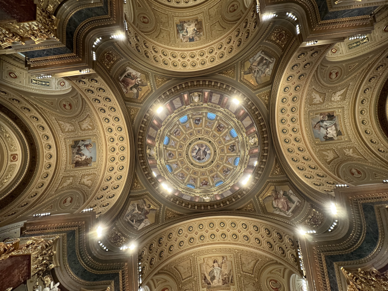
5. 聖伊什特萬聖殿 (Szent István Bazilika)
布達佩斯規模最大的教堂，以匈牙利第一位國王命名，內部供奉著國王神聖的「右手木乃伊」。
💭 Bryan 親測：個人覺得是繼梵蒂岡聖保羅大教堂後最雄偉的巴洛克式教堂！雖然要門票，但絕對值得進去參觀！
💡 關門前 2hr 進場免費，免費票建議事先網路預訂。
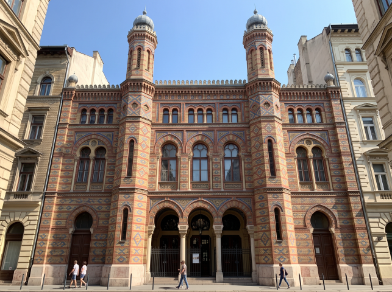
6. 倫巴哈街猶太會堂 (Rumbach zsinagóga)
摩爾復興式風格的猶太會堂，外觀有著獨特的紅黃磚條紋與八角形尖塔，內部經過精心修復，展現出獨特的幾何美學。
💭 Bryan 親測：雖然去的那天關門😭，但若對猶太或二戰歷史有興趣的一定要來參觀！
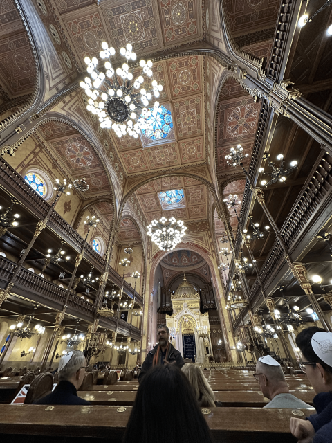
7. 菸草街會堂 (Dohány utcai Zsinagóga)
歐洲最大、世界第二大的猶太會堂。結合了摩爾與浪漫主義風格，旁邊有著令人動容的「生命之樹」紀念碑。
💭 Bryan 親測：壯觀的會堂、沈默的墓園、展示二戰傷痕的地窖，以及非常精彩的導覽，每一個都令人述說著戰爭的可怕。
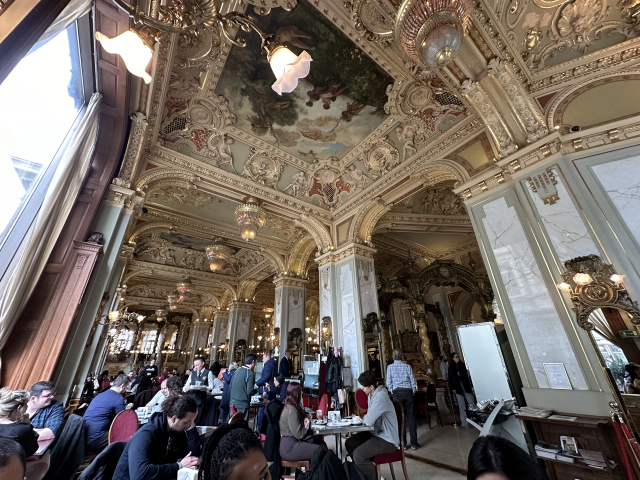
8. 紐約宮殿咖啡 (New York Café)
被譽為「世界最美咖啡館」，內部金碧輝煌宛如皇宮。百年前曾是匈牙利文人雅士與作家的聚集地。
💭 Bryan 親測：網美店，但真的很漂亮！適合點一杯飲料順道拍很多美照：）不然餐點太貴了😭
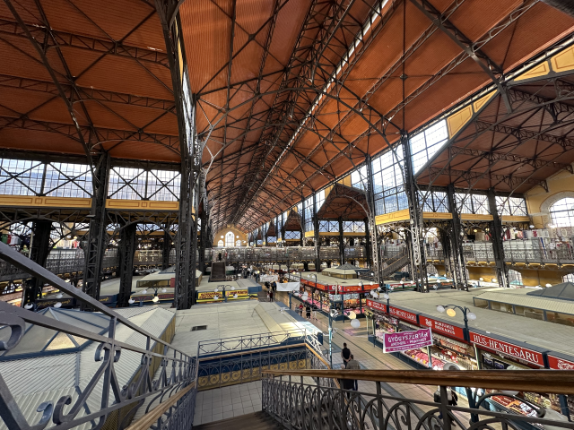
9. 中央市場 (Nagycsarnok)
布達佩斯最大最古老的室內市場，有著美麗的彩色磁磚屋頂。一樓販售生鮮與香料(如紅椒粉)，二樓則是紀念品與熟食區。
💭 Bryan 親測：超大！什麼都賣～二樓有在地餐廳，但感覺是賣給外國人的，似乎都比較貴一點…建議停看聽！
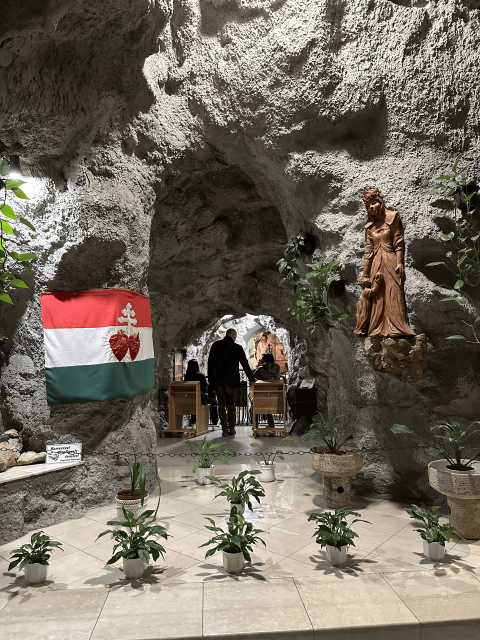
10. 蓋特勒山洞 (Gellérthegyi Barlang)
隱藏在蓋特勒山內的神祕洞穴教堂，由保羅會修士於20世紀初建造，曾在共產時期被封閉。
💭 Bryan 親測：洞穴裡面的教堂蠻新鮮的，還有語音導覽可以了解這裡有趣的歷史。最記得是售票員還會用中文很熱情的跟你說謝謝😂🤣～
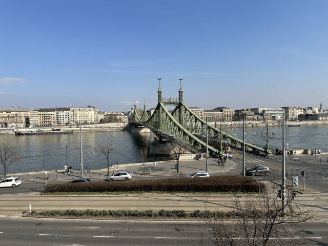
11. 塞切尼鏈橋 (Széchenyi Lánchíd)
連接布達與佩斯的最古老橋樑，橋頭有著威武的石獅雕像，是布達佩斯最經典的明信片視角。
💭 Bryan 親測：果然是布達佩斯必遊景點，無論搭電車、走路或坐船經過都別有一番風味呢！
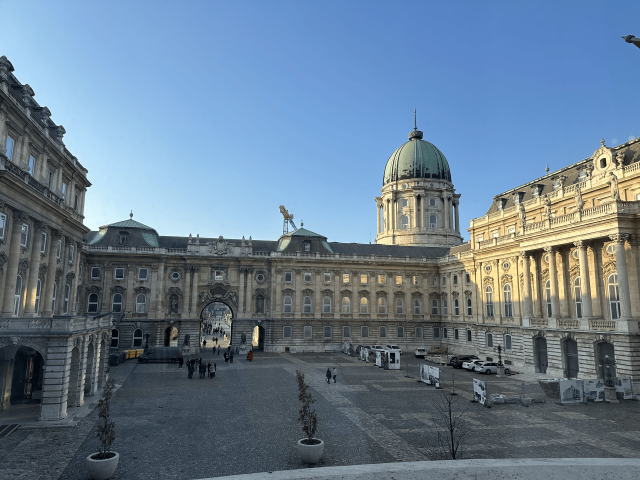
12. 布達城堡 (Budavári Palota)
俯瞰多瑙河的宏偉王宮，曾是匈牙利國王的居所，現為多座國家級博物館的所在地。
💭 Bryan 親測：拍塞切尼鏈橋的絕佳地點！這裡還有三間收費的博物館：國家美術館、城堡博物館、歷史博物館跟聖史蒂芬廳。有興趣的都可以參考看看唷～
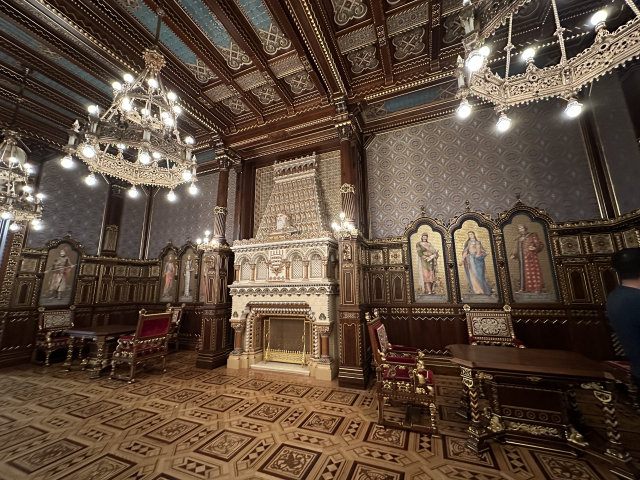
14. 布達佩斯歷史博物館 (Budapesti Történeti Múzeum)
展示了布達佩斯從羅馬時代到現代的發展歷程，能深入了解這座雙子城的輝煌與滄桑。
💭 Bryan 親測：很大的博物館，錯綜複雜。裡面看得到古老的城牆與建造在牆裡的禮拜堂，也有一些有趣的展覽或還原的大廳。
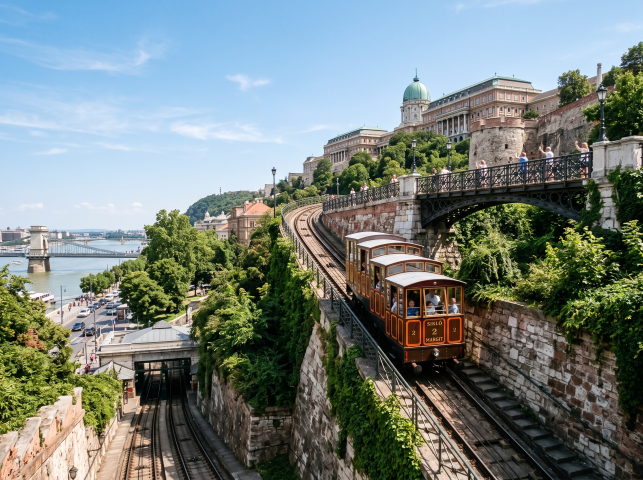
16. 布達佩斯城堡山纜車 (Budapest Castle Hill Funicular)
建於 1870 年的復古木造纜車，連接鏈橋與布達城堡，是輕鬆上山且能飽覽多瑙河美景的交通工具。
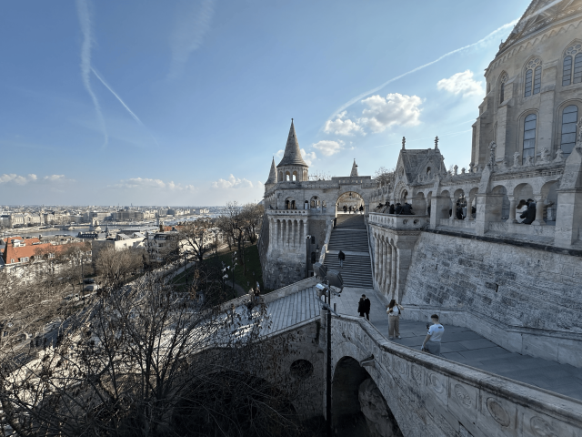
17. 漁人堡 (Halászbástya)
宛如童話城堡般的白色建築，擁有七座尖塔代表馬札爾人的七個部落。這裡是眺望對岸國會大廈與多瑙河的完美觀景台。
💭 Bryan 親測：超美的免費景點！不愧是網美聖地，一定要穿得美美的過來唷！推薦晴天早上，沒人又向光～漁人堡本身免費，但要到上面的露台就要收費唷！
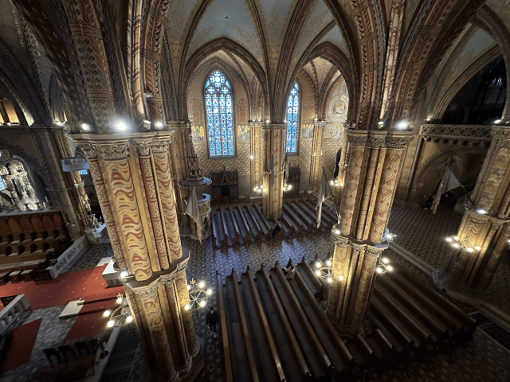
18. 馬加什教堂 (Budavári Nagyboldogasszony-templom)
擁有絢麗的馬賽克磁磚屋頂與哥德式尖塔，曾是歷代匈牙利國王加冕的神聖場所。
💭 Bryan 親測：裡面很值得進去，能感受到建築的雄偉與空氣中的莊嚴。還可選擇登上塔頂瞭望全城唷！
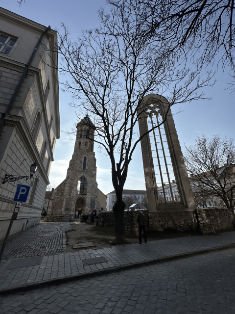
19. 瑪麗亞瑪丹娜塔 (Mária Magdolna Torony)
二戰中遭摧毀僅存的哥德式鐘塔遺跡，登上塔頂可將布達區的紅磚屋頂盡收眼底。
💭 Bryan 親測：用不一樣的角度俯瞰整個布達佩斯的美景，但要先挑戰的是你的體力～也有跟漁人堡露台一起的通票唷！
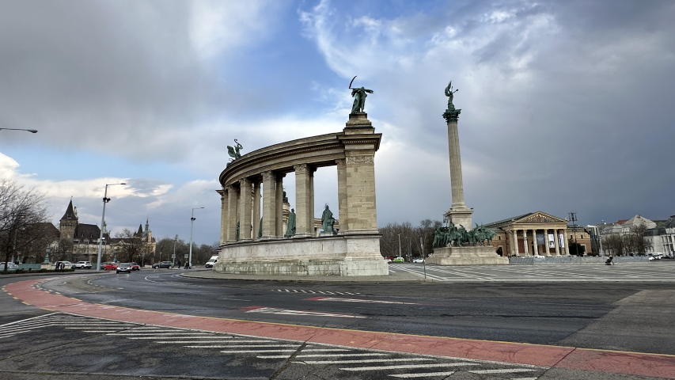
20. 英雄廣場 (Hősök tere)
紀念馬札爾人定居喀爾巴阡盆地 1000 年而建，中央的千年紀念碑與兩側的歷史名人雕像氣勢磅礴。
💭 Bryan 親測：非常雄偉的廣場
21. 塞切尼溫泉浴場 (Széchenyi Gyógyfürdő)
歐洲最大的溫泉浴場，擁有鮮黃色的宮殿式建築與巨大的戶外溫泉池，當地人甚至會在池裡下西洋棋。
💭 Bryan 親測：大概是全匈牙利最有名的溫泉浴場，巨大的室外泳池真的非常誇張！
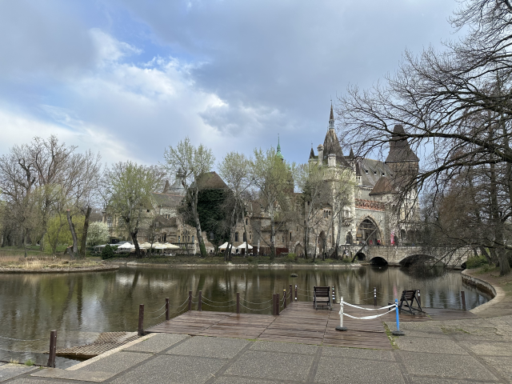
22. 沃伊達奇城堡 (Vajdahunyad vára)
位於城市公園內，融合了羅馬、哥德、文藝復興與巴洛克等多種建築風格的浪漫城堡。
💭 Bryan 親測：來之前不知道有這座看起來很特別的城堡qq ，光外面晃一圈就覺得下次一定要來！
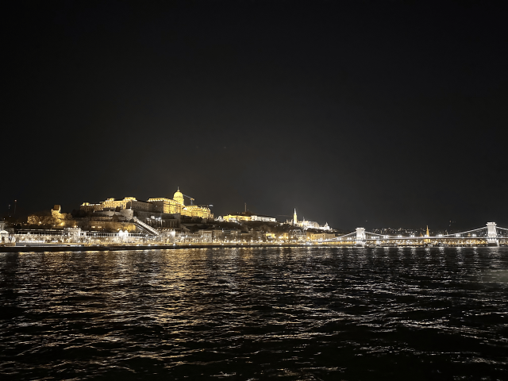
23. 多瑙河遊船 (Danube River Cruise)
搭乘遊船航行於多瑙河上，是欣賞布達佩斯兩岸世界遺產夜景的最浪漫方式。
💭 Bryan 親測：夜晚點燈之後的遊船真的非常美～若想聽語音導覽也有中文選項，且介紹精彩！
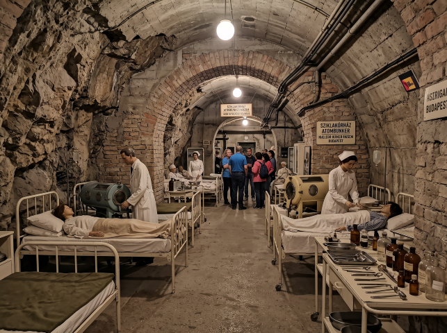
24. 岩石醫院核子碉堡博物館 (Sziklakórház Atombunker Múzeum)
隱藏在城堡山下的天然洞穴中，二戰時作為秘密醫院，冷戰期間更被擴建為核子防空洞。
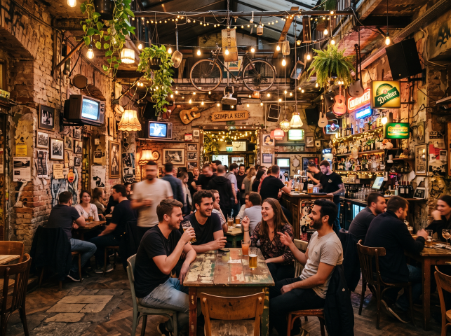
25. 猶太區廢墟酒吧 (Ruin Bars)
布達佩斯獨有的夜生活文化，將第七區廢棄的舊建築與庭院改造成充滿藝術感與嬉皮風格的特色酒吧。
🏔️ 布達佩斯近郊一日遊：小鎮探索與跟團玩法
除了市區，布達佩斯周邊的小鎮與自然景觀也十分迷人。你可以選擇搭乘火車/巴士自行前往，或報名專車一日遊：
📍 自行前往推薦 (火車/渡輪/巴士)
聖安德烈 (Szentendre)
⏱️ ~42min充滿地中海風情與藝術氣息的小鎮。
埃斯泰爾戈姆 (Esztergom)
⏱️ ~65min匈牙利舊都，擁有全匈牙利最大的教堂「埃斯泰爾戈姆聖殿」。
維謝格拉德 (Visegrád)
⏱️ ~50min多瑙河曲流的絕佳觀景點，擁有壯觀的城堡遺址與雪橇軌道。
格德勒 (Gödöllő)
⏱️ ~25min茜茜公主（Sissi）最愛的夏宮所在地。
🎉 年度慶典：三大必訪狂歡時刻
感受多瑙河畔最迷人的節慶氛圍
布達佩斯的節慶完美結合了音樂、藝術與濃厚的生活氣息。從盛夏的島嶼音樂狂歡，到冬季溫暖人心的熱紅酒市集，一年四季都有驚喜。
歐洲最大型的音樂節之一，在奧布達島（Óbuda Island）上舉行。裡有大量的國際遊客，非常容易在充滿活力的音樂、藝術和文化活動中認識新朋友。環境開放包容，適合喜歡熱鬧氣氛的人。
為紀念匈牙利偉大作曲家巴托克·貝拉而舉辦。匯集了世界級的古典音樂、當代舞蹈、爵士樂與世界音樂，讓布達佩斯的春天充滿藝術的悸動。
被評為歐洲最美聖誕市集之一！聖伊什特萬聖殿前的光雕秀、廣場上熱騰騰的煙囪捲香氣與熱紅酒，讓人沉浸在最浪漫濃厚的東歐節慶氛圍中。
🚆 交通全攻略：機場聯外與市區移動建議
📍 從李斯特·費倫茨國際機場 (BUD) 出發
機場特快巴士 (100E)
直達市中心🛫 起點機場航廈 Liszt Ferenc Airport 2
🏁 終點Deák Ferenc tér M (市中心交通樞紐)
⏱️ 時間約 30 分鐘
班距5 - 10 分鐘
💶 價格單程 2,500 Ft
聯外火車與長途巴士站
- 布達佩斯東站 (Budapest Keleti) 路線多為國際線與城際列車。 📍 Google Maps
- 布達佩斯西站 (Budapest Nyugati) 路線多為西北方向 (多瑙河三鎮、維謝格拉德等)。 📍 Google Maps
- 奈普利蓋特巴士站 (Népliget Bus Station) 主要跨國/長途客運轉運站 (如 FlixBus)。 📍 Google Maps
📍 市內交通與布達佩斯卡
布達佩斯交通中心 (BKK)
涵蓋地鐵 (Metró)、電車 (Villamos)、巴士 (Autóbusz) 與無軌電車 (Trolibusz)，在布達佩斯行政區內統一計價（機場線例外）。強烈建議下載 Budapest GO 購買電子票。
- 單程票： 500 Ft（公車、地鐵、輕軌通用；若直接跟司機購買需額外付 200 Ft）
- 10 次票： 4,500 Ft
- 一/多日通票 (Connectpass)： 12€ 起（包含往返機場交通）
⚠️ 打票注意事項：
紙本單程/多程票記得在進站前去打票機打票，否則會被視為無效票！（詳情參閱 紙本打票說明）。盡量在售票機買或使用電子票。
布達佩斯卡 (Budapest Card)
適合喜歡博物館、不介意小眾但能獲得更道地體驗的旅客。提供 24hr / 48hr / 72hr / 96hr 方案，包含無限次搭乘 BKK 交通工具。可在線上預訂後到當地指定地點取件。
💡 十大免費包含景點：
- 聖路卡斯溫泉 St. Lukács Thermal Bath
- 匈牙利國家美術館 Hungarian National Gallery
- 匈牙利國家博物館 Hungarian National Museum
- 祖格利蓋特纜車 Zugliget Chairlift
- 恐懼雕塑公園 Memento Park
- 布達佩斯歷史博物館 – 城堡博物館 Castle Museum
- 聖伊什特萬大廳 Saint Stephen’s Hall
- 美術博物館 Museum of Fine Arts
- 帕爾維爾吉岩洞 Pál-völgyi Cave
- 多瑙河遊船 Danube River Cruise
⚠️ 不包含：國會大廈、漁人堡露台。塞切尼浴場僅享有 20% off 折扣。
🛏️ 住宿建議：精選安全且高性價比的獨旅避風港
| 🛏️ 住宿飯店 / 青旅 | 🔗 預訂連結 | 💰 平均房價參考 | ⭐ 旅客評分 | 💡 站長為何推薦 |
|---|---|---|---|---|
| Flow Spaces 📍 Google Maps | EUR 30 - 50 / 晚 | 約 9.1 / 10 位置優越，空間寬敞 |
靠近中央市場，擁有極其寬敞的公共空間與質感設計，床鋪隱私性佳，是市區最舒適的青旅之一。 | |
| JO&JOE Budapest 📍 Google Maps | EUR 25 - 45 / 晚 | 約 8.8 / 10 現代設計，派對氛圍 |
位於鬧區的潮流連鎖青旅，自帶酒吧與活動空間，設計充滿活力，適合喜歡社交與微派對氛圍的旅客。 | |
| AMISTAT Hub Hostel 📍 Google Maps | EUR 20 - 40 / 晚 | 約 8.9 / 10 活動豐富，交友首選 |
距離廢墟酒吧區很近，每天都有不同的社交活動與共餐企劃，員工極度熱情，是結交旅伴的好地方。 | |
| Wombat's City Hostel 📍 Google Maps | EUR 25 - 50 / 晚 | 約 8.6 / 10 市中心，規模大安全 |
歐洲知名大型連鎖青旅，管理完善且極度安全。地點完美，下樓就是熱鬧的市中心與景點區。 | |
| Avenue Hostel 📍 Google Maps | EUR 15 - 35 / 晚 | 約 8.5 / 10 含早餐，床鋪隱私高 |
坐落在安德拉什大街上，床鋪皆附有遮光簾提供極佳隱私，且通常附贈免費早餐，小資獨旅神仙選擇。 |
🍝 在地美食指南：匈牙利的舌尖狂歡
🍽️ 必吃美食
紅椒粉是匈牙利料理的靈魂！這裡的燉菜與甜點不僅極具特色，更是撫慰旅人身心的絕佳Comfort Food：
可以說是匈牙利的國菜。與常見的濃稠燉肉不同，傳統的 Goulash 更接近於「肉湯」，加入紅椒粉、牛肉塊、馬鈴薯和蔬菜，喝起來溫暖又香濃。
雞肉燉煮得軟嫩，搭配充滿紅椒香氣的濃郁酸奶油醬汁，通常會配上特有的麵疙瘩 (Nokedli) 一起食用，風味十足。
鮮美的傳統魚湯，通常使用淡水魚熬煮，並加入大量的匈牙利紅椒粉調味，味道極度濃郁，是非常地道的在地美食。
Lecsó 是一種以甜椒、番茄和洋蔥為基底的燉菜（有時加入香腸）；Pörkölt 則是將肉類燉煮至軟爛入味，這兩者都是非常推薦的飽足餐點。
布達佩斯街頭最具代表性的美食。油炸的扁平麵團外酥內軟，傳統吃法是抹上大量蒜泥醬，再鋪滿厚厚的酸奶油和起司。
將麵團捲在木棍上炭火烘烤的甜點，外層焦香酥脆、內層鬆軟，裹上肉桂或核桃粉，是邊走邊吃的最佳甜點。
傳統匈牙利海綿蛋糕，內餡是滑順的巧克力奶油，最上層則是硬脆的焦糖片，口感層次極其分明。
🎒 獨旅實戰：友好餐廳與平價清單
在布達佩斯獨自用餐完全沒壓力，以下 5 間特色店鋪更是小資首選：
| 🍴 餐廳名稱 | 💰 價格水平 | 📍 交通位置 | 💡 站長推薦理由 |
|---|---|---|---|
| Nokedli Factory 📍 在地圖開啟 | 極低價位 麵疙瘩快餐 |
市中心 Oktogon 站旁 |
平價道地的匈牙利麵疙瘩 (Nokedli) 專賣店！有紅椒雞肉等多種口味選擇，出餐快速且份量足，是獨旅隨時填飽肚子的神店。 |
| Krumplis Lángos 📍 在地圖開啟 | 極低價位 街頭炸麵包 |
Flórián tér 地下通道內 |
隱藏在地下通道裡的超人氣在地炸麵包 (Lángos) 小店！遠離觀光客區，價格極度便宜，現炸的外皮酥脆搭配滿滿的酸奶油起司超滿足。 |
| Hoppácska 📍 在地圖開啟 | 低價位 創意煙囪捲 |
第九區，近 Blaha Lujza tér |
將傳統甜食煙囪捲改良為「鹹食與甜食都有」的創意料理店！用煙囪捲當作外殼包入熱狗或燉肉，獨旅點一份邊走邊吃剛剛好。 |
| Kisharang Étkezde 📍 在地圖開啟 | 中等價位 溫馨家常菜 |
近聖伊什特萬聖殿 |
氣氛極度溫馨的匈牙利家常菜小館，店面不大但極具人情味。燉牛肉湯與紅椒雞非常地道，價格親民，是一個人坐下來好好吃頓飯的首選。 |
| Molnár's kürtőskalács 📍 在地圖開啟 | 低價位 人氣甜點 |
瓦茨街 (Váci utca) 旁 |
這家是布達佩斯市區評價最好的煙囪捲名店唷！現場烘烤的香氣四溢，外脆內軟，還可以加購冰淇淋塞在中間，邪惡度滿分。 |
🇭🇺 匈牙利獨旅生存避雷箱
貨幣：使用福林 (HUF)
匈牙利使用當地貨幣福林（HUF），並非歐元。千萬不要在路邊（特別是瓦茨街或機場）的換匯所換錢，匯率極差且常被扣高手續費。
布達佩斯刷卡極度普及。如需現金，請拿著海外提款卡找標示為「OTP Bank」或「Erste」等正規銀行 ATM 直接提領。
交通：紙本車票必打卡
布達佩斯的查票非常嚴格，跟德國很類似。如果購買實體紙本單程票，進地鐵站或上公車時，務必要找到機器「打洞印時間」，沒有打卡的票一律視同逃票罰款！
下載 Budapest GO App 買電子票最省事！但記得上車前要在車門外掃描 QR code 才算開通。
餐飲：小費通常已計入
在布達佩斯多數的餐廳用餐，帳單上通常會自動加上 10% - 15% 的服務費（Service Charge）。
結帳前請務必看一下帳單明細，如果有寫上服務費，就不需要再額外留下小費囉，避免當了冤大頭！

Bryan | Europe Solo Guide
「獨旅不是孤單，而是給自己一場完整的自由。」
熱愛穿梭在歐洲老城區的石板路上與壯麗群山間。目前已獨自走訪 41 個歐洲國家，致力於將複雜的交通、住宿與隱藏景點，轉化為有溫度的獨旅攻略。希望這篇文章能幫你省下找資料的時間，把精力留給旅途中的美好。
✉️ 聯繫我 / 合作邀約